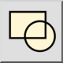
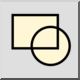

Menu: Blok > Prikaži vse bloke
Shortcut: B, S
Commands: blockshowAll | bs
Toolbar / Icon:


Menu: Blok > Prikaži vse bloke
Shortcut: B, S
Commands: blockshowAll | bs
Opis:
To orodje se lahko uporabi, da naredimo vse bloke naenkrat vidne.